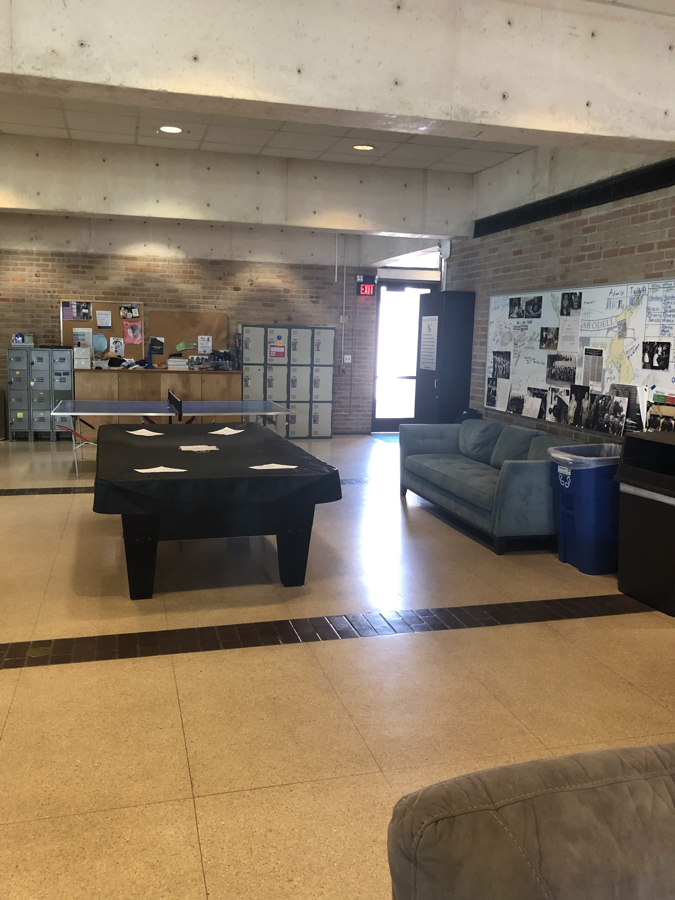
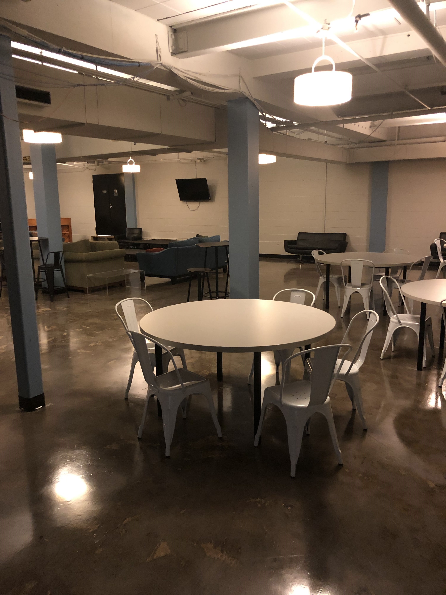
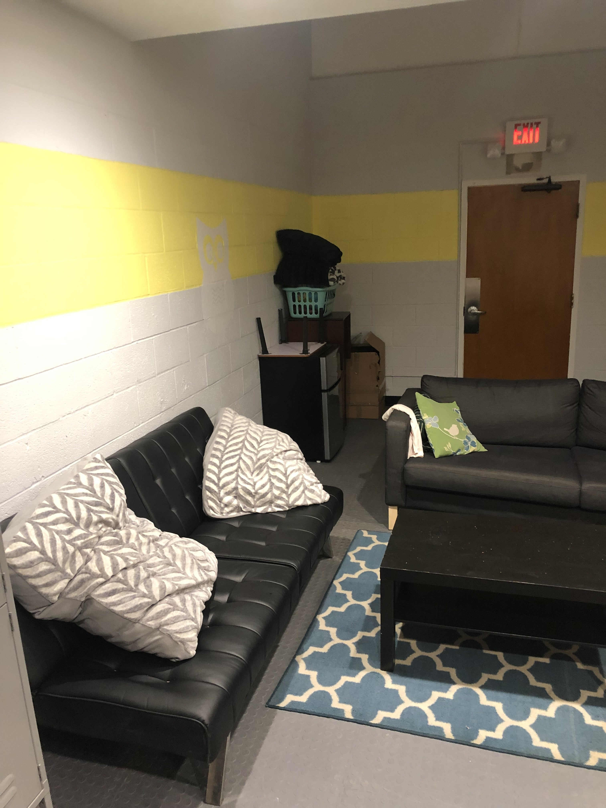
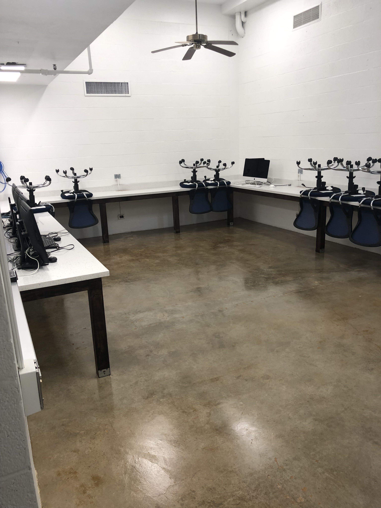

FACILITIES
Lovett is made up of four main buildings: the six-story residential Toaster that many of us know and love; a residential building made up of eight-person suites (formerly belonging to Baker College) which also houses the RFAs; a magisters' house; and our beloved Commons.
ROOMS
At Lovett, all suites are attached to bathrooms shared by the members of the suite (no communal bathrooms, yay!). The most common set-up is the quad suite which consists of two 12 x 15 doubles on either side of a bathroom. Additionally, there are five suiteless doubles which consist of a 12 x 15 room attached to a bathroom, seven single suites which consist of two singles on either side of a bathroom, and three eight-person suites found in the old Baker wing, which consist of two sets of two sets of doubles attached to common rooms on either side of a bathroom.
THE COMMONS
The Lovett Commons are where you'll spend most of your time eating, studying, and just hanging out with friends. Our commons are split up into two sections: an Upper Commons and a Lower Commons.
Upper Commons
The Upper Commons is where most Lovetteers eat their meals, containing a plethora of dining tables, in addition to a Private Dining Room (PDR) which can be reserved for club events or even classes! The Upper Commons is directly attached to Seibel Servery, which is shared with Will Rice College. Also in the Upper Commons is a newly done kitchen which is free for all Lovetteers to use.
Lower Commons
The Lower Commons is a lounge area which has a selection of (surprisingly comfy) couches, a pool table, a ping-pong table, and two TVs (one of them is set aside almost exclusively for Smash). Additionally, Central Committee (Lovett's government) holds its meetings in the Lower Commons every Tuesday at 10 PM.
BASEMENT
Lovett is famous for its extensive underground spaces, found directly beneath the Toaster. Rumor has it that the basement system was designed as a bunker in case of nuclear attack, but today it serves mostly as another space for Lovetteers to study and hang out with friends. Besides the main spaces listed below, Lovett's basement is also where you can find our Wood Closet, Music Room, Weight Room, and Laundry Room.
Lyle's
If you go down the stairs closest to the Commons and take a left, you'll probably run into Lyle's which is a bar-performance-esque space. Performances often take place in Lyle's (as well as the occasional social event), hosting both Lovetteers and the general Rice community alike.
Blue Room
The other large space in the Lovett basement aside from Lyle's is the Blue Room, named so because although the walls are no longer painted a bright blue, they were blue for a very long time and we hold on to our traditions dearly. Blue is still the overwhelming theme to the decor in the room. This space serves as another lounge area, and has couches and tables. Additionally, it is connected to the Off-Campus Lounge and the Movie Room!
Wiener Hole
Located on the same side of the basement as the Blue Room, the Wiener Hole is Lovett's dedicated study space (although many Lovetteers use other spaces to study such as the Blue Room or the Commons). It contains a variety of books and textbooks and really comfortable chairs for those late night study sessions when you don't want to take the walk to Fondy.
Computer Room
Located directly across from the Wiener Hole is the Computer Room, which, like the name would suggest, contains a bunch of computers—half Mac and half PC. Additionally, it has a printer, which often comes in handy (printing is 7 cents per page) for printing out assignments for class.